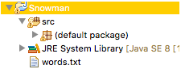

CMPT 202
Homework #2
Basic Snowman
Snowman is a fun spelling game whereby the computer chooses a random
word, and the player must guess it within 6 tries. For each
incorrect guess, a new part of the snowman is constructed. If the
player cannot correctly guess the word within 6 tries, an entire
snowman is completed, and the player loses. (For some odd reason the
player loses if they can build a snowman.) The player wins if they
guess the word within 6 tries.
Write a program that plays basic snowman. The computer will choose a
word at random from a dictionary of possible words.
This program can be written in any style you choose. One simple
strategy of the output is as follows: (what the user enters appears
in boldface.)
_ _ _ _
_ _
Incorrect guesses = 0
Select a letter: a
_ a _ _ _ _
Incorrect guesses = 0
Select a letter: t
t does not appear
_ a _ _ _ _
Incorrect guesses = 1
Select a letter: s
_ a _ _ _ s
Incorrect guesses = 1
Select a letter: m
m does not appear
_ a _ _ _ s
Incorrect guesses = 2
and so forth. At the conclusion of the game, output either whether
the player won or lost.
c a p e r s
Congratulations -
you won!
or
_ a p _ _ s
Incorrect guesses =
6
I'm sorry, you lost!
The word was c a p e r s
A starting point for this program is as follows:
- Snowman.java
which reads in the following textfile
- words.txt
Be sure to set up your Eclipse project similar to what is shown
below. Otherwise the program Snowman.java will
be unable to find the file words.txt

Specifics:
Your program should be case-neutral: 'a' is the same as 'A'.
Perform some basic error checking:
- If they enter a character other than 'a ... z' or 'A ... Z' you simply
ignore the input value and prompt again. (In other words, if they
enter '$' as a character, you do not check to see if it occurs in
the word, nor do you count it against one of their guesses.
- Also check if they enter a letter they have already guessed. In
this case report they have already guessed that letter. Duplicate
incorrect guesses only count once towards the number of incorrect
guesses.
Submit your solution to the Canvas dropbox for Homework #2.
A rubric is posted for this assignment on Canvas.